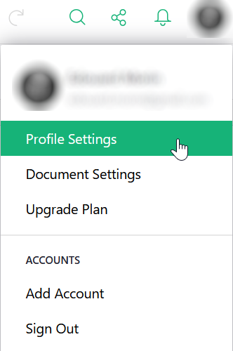
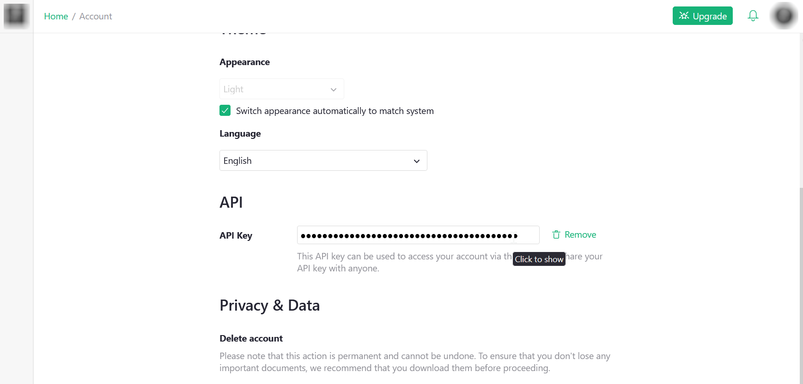
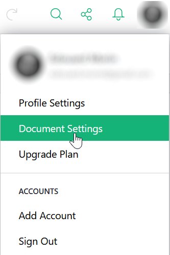
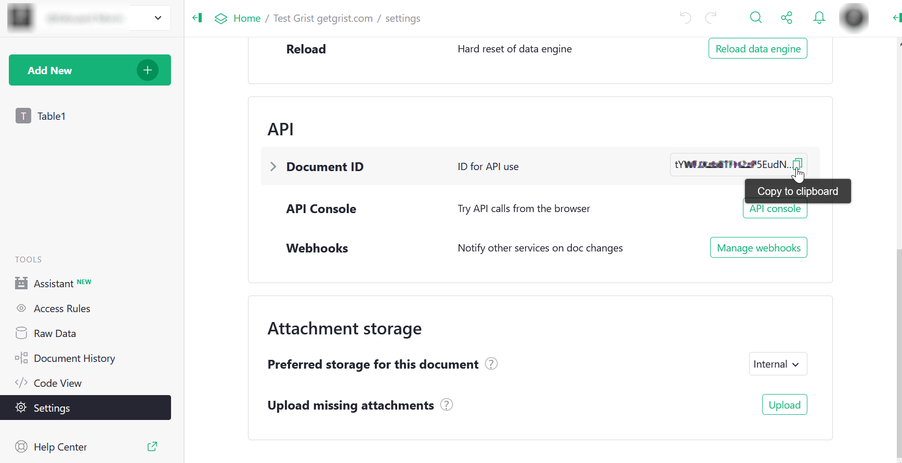

gristapi
Any user logged in to https://docs.getgrist.com has an API key that allows them to read/write to documents they have permissions to (see https://support.getgrist.com/).
To retrieve this key, go to “Profile Settings” from your profile icon.

Then at the bottom of the page you can copy your API key.

It is recommended to set this key as an environment variable, so that
it does not appear in your R scripts. In our examples, this key will be
injected by Sys.getenv("GETGRIST_KEY").
To obtain the identifier, you must first locate yourself on this document in the Grist interface, then in the same way as before, go to “Document settings” from the icon of your profile.

Puis dans la partie “API” de la page, vous pouvez copiez l’identifiant du document.

It is also recommended to put this identifier in an environment
variable, in our examples, this identifier will be injected by
Sys.getenv("GETGRIST_DOC_TEST").
The first thing to do to use gristapi is to initialize the connection to the Grist API of the document (which can contain several sheets or tables).
library(gristapi)
api <- grist_api$new(
server = 'https://docs.getgrist.com',
api_key = Sys.getenv("GETGRIST_KEY"),
doc_id = Sys.getenv("GETGRIST_DOC_TEST")
)If no error message appears, the connection to your API was
successful and the api object can now be used to process
the data and sheets of your document from R.
The details of your connection information (document metadata) are displayed in the console, simply by displaying the object:
api
#> [1] "-----------------"
#> [1] "grist_api print"
#> [1] "-----------------"
#> [1] "<Document info>"
#> $name
#> [1] "Test Grist getgrist.com"
#>
#> $createdAt
#> [1] "2025-07-21T08:37:26.704Z"
#>
#> $updatedAt
#> [1] "2025-07-22T14:14:11.188Z"
#>
...The main methods of the object thus created are call(),
table_to_json(),
json_to_table().
To create a table, use the add_records function with the
create_or_replace=TRUE option. The table is assigned an
identifier without spaces or special characters (table_id)
and given a data.frame to inject
(record_dicts).
add_records(api,
table_id = "iris",
record_dicts = iris,
create_or_replace = TRUE
)## [1] 1 2 3 4 5 6 7 8 9 10 11 12 13 14 15 16 17 18
## [19] 19 20 21 22 23 24 25 26 27 28 29 30 31 32 33 34 35 36
## [37] 37 38 39 40 41 42 43 44 45 46 47 48 49 50 51 52 53 54
## [55] 55 56 57 58 59 60 61 62 63 64 65 66 67 68 69 70 71 72
## [73] 73 74 75 76 77 78 79 80 81 82 83 84 85 86 87 88 89 90
## [91] 91 92 93 94 95 96 97 98 99 100 101 102 103 104 105 106 107 108
## [109] 109 110 111 112 113 114 115 116 117 118 119 120 121 122 123 124 125 126
## [127] 127 128 129 130 131 132 133 134 135 136 137 138 139 140 141 142 143 144
## [145] 145 146 147 148 149 150This function returns the vector of ids (integers) created in the table.
Please note that all tables (or sheets) created in Grist are assigned an identifier beginning with a capital letter! Similarly, if your column names contain “.”, they will be automatically replaced with “_“.
It is therefore recommended to use the listtables() and
listcolumns() functions after creating a table to ensure
that the naming of the structure will not affect your subsequent
processing.
To import data from a table into R, use the fetch_table
function. If the filters option is not present, all data
from the table is retrieved.
giris <-fetch_table(api, "Iris")
head(giris)## # A tibble: 6 × 6
## id Sepal_Length Sepal_Width Petal_Length Petal_Width Species
## <int> <dbl> <dbl> <dbl> <dbl> <chr>
## 1 1 5.1 3.5 1.4 0.2 setosa
## 2 2 4.9 3 1.4 0.2 setosa
## 3 3 4.7 3.2 1.3 0.2 setosa
## 4 4 4.6 3.1 1.5 0.2 setosa
## 5 5 5 3.6 1.4 0.2 setosa
## 6 6 5.4 3.9 1.7 0.4 setosaIf you want to filter before importing the data (useful for large tables), you must provide a filter written as indicated in the Grist documentation
gvirginica <- fetch_table(api, "Iris", filters = 'filter={"Species": ["virginica"]}')
head(gvirginica)## # A tibble: 6 × 6
## id Sepal_Length Sepal_Width Petal_Length Petal_Width Species
## <int> <dbl> <dbl> <dbl> <dbl> <chr>
## 1 101 6.3 3.3 6 2.5 virginica
## 2 102 5.8 2.7 5.1 1.9 virginica
## 3 103 7.1 3 5.9 2.1 virginica
## 4 104 6.3 2.9 5.6 1.8 virginica
## 5 105 6.5 3 5.8 2.2 virginica
## 6 106 7.6 3 6.6 2.1 virginicaIt is also possible to sort the data and limit the number of rows.
gbigpetal <- fetch_table(api, "Iris", filters = 'sort=-Petal_Width&limit=10')
gbigpetal## # A tibble: 10 × 6
## id Sepal_Length Sepal_Width Petal_Length Petal_Width Species
## <int> <dbl> <dbl> <dbl> <dbl> <chr>
## 1 101 6.3 3.3 6 2.5 virginica
## 2 110 7.2 3.6 6.1 2.5 virginica
## 3 145 6.7 3.3 5.7 2.5 virginica
## 4 115 5.8 2.8 5.1 2.4 virginica
## 5 137 6.3 3.4 5.6 2.4 virginica
## 6 141 6.7 3.1 5.6 2.4 virginica
## 7 116 6.4 3.2 5.3 2.3 virginica
## 8 119 7.7 2.6 6.9 2.3 virginica
## 9 121 6.9 3.2 5.7 2.3 virginica
## 10 136 7.7 3 6.1 2.3 virginicaTo add rows to a table, we use the
add_records function again. The submitted data.frame must
not contain a column named id and its structure must be
identical to that of the destination table.
records <- data.frame(
Sepal_Length = c(6.5,6.2),
Sepal_Width = c(2.9,3.3),
Petal_Length = c(3.5,3.1),
Petal_Width = c(7.4,6.9),
Species = c("missouriensis","missouriensis")
)
add_records(api, "Iris", records)## [1] 151 152This function returns an integer vector containing the
ids of the new rows, if the save was successful (only the
first 500 ids are returned).
To edit rows in a table, use the
update_records function. The submitted data.frame must
contain a column named id to target the rows to be updated.
The structure must be contained by the structure of the destination
table.
records <- data.frame(
id = as.integer(c(1,2)),
Sepal_Length = c(5.1,5.0),
Sepal_Width = c(3.5,3.1),
Petal_Length = c(1.5,1.4)
)
update_records(api, "Iris", records)## [1] TRUEThis function returns TRUE if the recording was successful.
To delete rows from a table, use the
delete_records function. A vector of integers containing
the ids of the rows to be deleted is submitted.
delete_records(api, "Iris", as.integer(c(3,4)))## [1] TRUEThis function returns TRUE if the deletion was successful.
To replace all the data in a table, you must, as
when creating the table, use the add_records function with
the create_or_replace=TRUE option. In this case, you delete
and recreate a new table with the same identifier, so you can modify the
structure. Be careful, in the case of a table replacement you lose any
filters, styles or relationships saved from the Grist interface for this
table (you may need to prioritize deleting the entire ID sequence and
then simply adding all the rows).
oldiris <- fetch_table(api, "Iris") |> subset(select = c(-id))
newiris <- data.frame(my_id = 1:nrow(oldiris), oldiris)
add_records(api,
table_id = "Iris",
record_dicts = newiris,
create_or_replace = TRUE
)## [1] 1 2 3 4 5 6 7 8 9 10 11 12 13 14 15 16 17 18
## [19] 19 20 21 22 23 24 25 26 27 28 29 30 31 32 33 34 35 36
## [37] 37 38 39 40 41 42 43 44 45 46 47 48 49 50 51 52 53 54
## [55] 55 56 57 58 59 60 61 62 63 64 65 66 67 68 69 70 71 72
## [73] 73 74 75 76 77 78 79 80 81 82 83 84 85 86 87 88 89 90
## [91] 91 92 93 94 95 96 97 98 99 100 101 102 103 104 105 106 107 108
## [109] 109 110 111 112 113 114 115 116 117 118 119 120 121 122 123 124 125 126
## [127] 127 128 129 130 131 132 133 134 135 136 137 138 139 140 141 142 143 144
## [145] 145 146 147 148 149 150The Grist API provides a synchronization method that, based on a
unique key, either adds the entry or updates the existing one. Thus, to
synchronize a data frame to a table, we use the
sync_table function. The submitted data frame must not
contain a column named id and its structure must be
identical to that of the destination table. The unique key can be on one
or more fields.
new_data <- fetch_table(api, "Iris", filters = 'filter={"Species": ["missouriensis"]}')
new_data$Species <- "japonica"
new_data$my_id[new_data$my_id == 150] <- 151
new_data <- new_data |> subset(select = c(-id))
new_data## # A tibble: 2 × 6
## my_id Sepal_Length Sepal_Width Petal_Length Petal_Width Species
## <dbl> <dbl> <dbl> <dbl> <dbl> <chr>
## 1 149 6.5 2.9 3.5 7.4 japonica
## 2 151 6.2 3.3 3.1 6.9 japonica
sync_table(api, "Iris", new_data, key_cols = c("my_id"))## [1] TRUE
tail(fetch_table(api, "Iris"))## # A tibble: 6 × 7
## id my_id Sepal_Length Sepal_Width Petal_Length Petal_Width Species
## <int> <int> <dbl> <dbl> <dbl> <dbl> <chr>
## 1 146 146 6.5 3 5.2 2 virginica
## 2 147 147 6.2 3.4 5.4 2.3 virginica
## 3 148 148 5.9 3 5.1 1.8 virginica
## 4 149 149 6.5 2.9 3.5 7.4 japonica
## 5 150 150 6.2 3.3 3.1 6.9 missouriensis
## 6 151 151 6.2 3.3 3.1 6.9 japonicaIt is possible to customize your exploration queries in tables using
the sql endpoint and the call method of
gristapi.
Examples :
req_sql <- "select * from Iris where Sepal_Length > 5 and Sepal_Width < 4"
api$json_to_table(
api$call(
url = paste0("/sql?q=",URLencode(req_sql)),
type_resp = "string"
),
"records"
)## # A tibble: 117 × 8
## id manualSort my_id Sepal_Length Sepal_Width Petal_Length Petal_Width
## <int> <int> <int> <dbl> <dbl> <dbl> <dbl>
## 1 1 1 1 5.1 3.5 1.5 0.2
## 2 4 4 4 5.4 3.9 1.7 0.4
## 3 9 9 9 5.4 3.7 1.5 0.2
## 4 15 15 15 5.4 3.9 1.3 0.4
## 5 16 16 16 5.1 3.5 1.4 0.3
## 6 17 17 17 5.7 3.8 1.7 0.3
## 7 18 18 18 5.1 3.8 1.5 0.3
## 8 19 19 19 5.4 3.4 1.7 0.2
## 9 20 20 20 5.1 3.7 1.5 0.4
## 10 22 22 22 5.1 3.3 1.7 0.5
## # ℹ 107 more rows
## # ℹ 1 more variable: Species <chr>